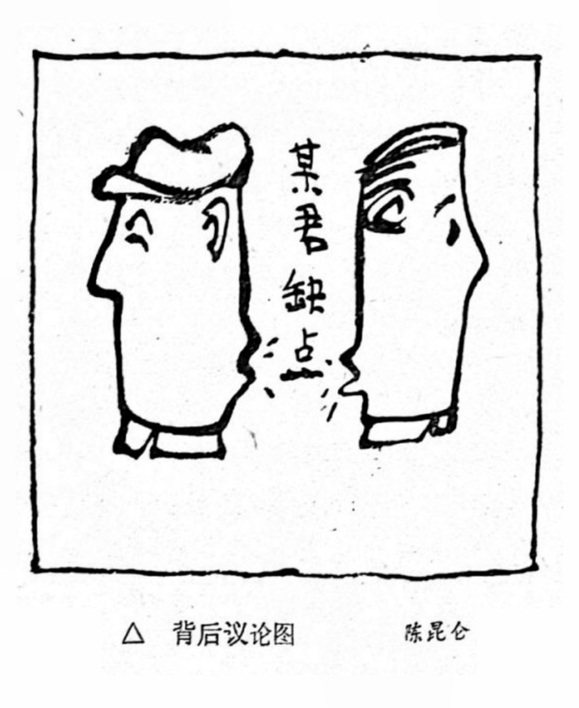

陈昆仑 《人事》1985年第3期（总第3期），第44页
背后议论图
Talking Behind Backs
- Text in the drawing
- 某君缺点
Mr So-and-so's shortcomings - Description
- Two men stand back to back, each turning his mouth sideways to the other, passing along the words “Mr So-and-so's shortcomings.”
- Note
- 背后议论, gossiping behind someone's back, was a standard complaint about workplace politics — criticism never raised openly at meetings.
- Artist
- Chen Kunlun 陈昆仑
- Published in
- 《人事》1985年第3期（总第3期）, p. 44
- Themes
- Envy of talent · Bureaucratism

Cite
Chen Kunlun, “背后议论图” [Talking Behind Backs], Renshi (Personnel) 《人事》, 1985, no. 3, p. 44.